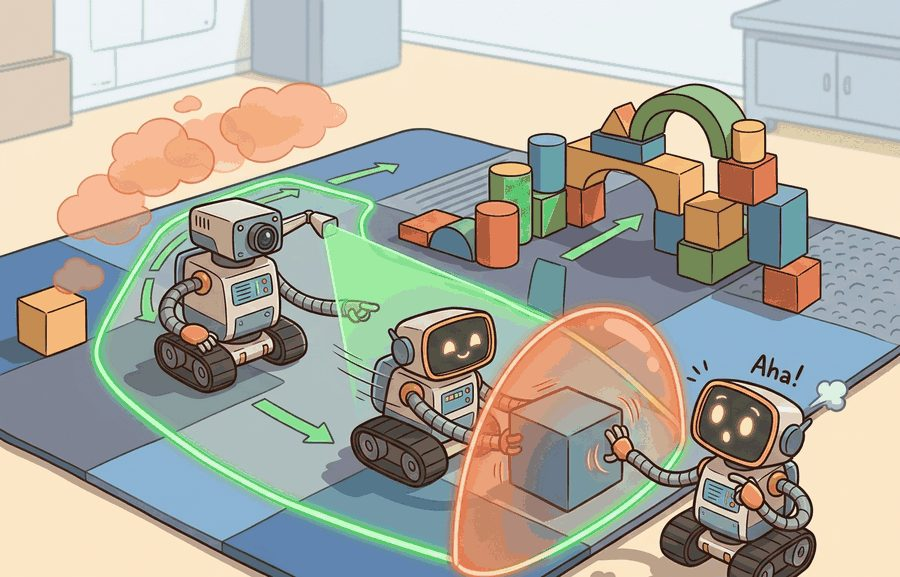
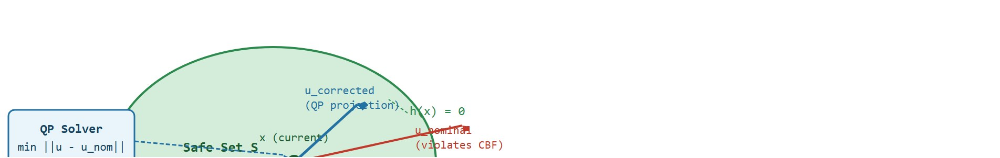
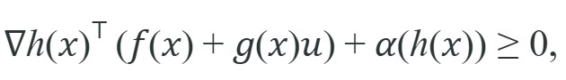
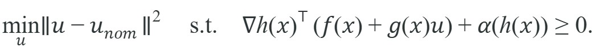

Safe sets matter when their coordinates match the controller that will use them.
A Safety-Critical Controls Researcher
A warehouse robot is 55 cm from a worker and accelerating. Its learned policy has never seen this exact configuration. Should you trust it? Control barrier functions answer that question with math, not hope: a scalar function watches the distance margin in real time and, if the nominal command would shrink it too fast, replaces that command with the nearest safe one in milliseconds, without retraining. As embodied AI moves from controlled labs into spaces shared with people, this kind of provable, always-on safety filter is no longer optional. Here you will build that filter from scratch, understand when Hamilton-Jacobi reachability offers stronger guarantees, and see exactly when each tool fits.

This section assumes familiarity with control-affine system notation and Lyapunov stability concepts introduced in section 7.2. The barrier-filter correction step also relies on the state-space and optimization-based control formulation covered in section 7.4. The ideas here are extended in section 54.4, where barrier conditions become part of a runtime shielded-policy supervisor, and they recur in Part XII alongside learned safety certificates for uncertain environments.
A policy that is correct 99.9 percent of the time still leaves one in a thousand commands free to drive a robot arm into a person's hand, and no amount of additional training data closes that last gap with certainty; the question that matters on a shared factory floor is not whether the policy usually behaves well, but whether the one dangerous command can be detected, blocked, or exited fast enough to protect people, equipment, and mission goals. Control barrier functions and Hamilton-Jacobi reachability live exactly at that boundary between learning and safety engineering.
A controller that keeps the robot safe on average is a statistical claim; a barrier function is a geometric one. Figure 54.3.1 captures this picture: the nominal policy reaches toward the edge of the admissible region while the safety layer projects the command back inside.
The core idea is direct. Define a scalar function $h(x)$ that is positive inside the safe region and negative outside it. Then demand that any control input $u$ keeps $h$ from decreasing too fast. If the nominal controller would push $h$ toward negative territory, a small correction filter replaces the offending command with the nearest admissible one, and a quadratic program (QP) solves for it in milliseconds. The robot keeps moving; it just moves in a direction that cannot exit the safe set in the next timestep. No retraining is needed, and the filter logs each intervention, so engineers can audit exactly when and why it activated. Figure 54.3.2 traces this filter end to end: the red nominal command would leave the safe set, the QP solver projects it to the nearest admissible blue command, and Hamilton-Jacobi reachability (orange) defines the safe-set boundary offline. The figure labels that offline boundary with a value function $V(x,t)$; this is the Hamilton-Jacobi reachability quantity defined formally later in this section, and for now it is enough to read $V(x,t) \ge 0$ as "safe over the planning horizon."

For a control-affine system $\dot{x}=f(x)+g(x)u$, where the state derivative depends linearly on the control input $u$ so the dynamics split into a drift term $f(x)$ and an input-multiplying term $g(x)$, a control barrier function (CBF) $h(x)$ enforces the safe set $\mathcal{S}=\{x: h(x) \ge 0\}$ through the inequality

where $\alpha$ is a class-K function, meaning a continuous, strictly increasing map with $\alpha(0)=0$ that sets how aggressively $h$ may approach the boundary. Hamilton-Jacobi reachability instead reasons about a value function whose superlevel set (the region where the value function is at or above a given level, here zero) marks states from which safety can still be guaranteed.Concretely, the correction filter is the quadratic program (QP) that Figure 54.3.2 labels "QP Solver": given the nominal command $u_{nom}$, solve

This QP has one decision variable per control input and one linear constraint per barrier function, so it is small enough to solve in well under a millisecond with a solver such as OSQP, which is what makes the filter usable at control-loop rates.A barrier or reachability layer is valuable because it speaks directly in state and action geometry. It says which commands keep safety recoverable, regardless of whether the nominal controller came from optimization, imitation, or a foundation model.
CBFs are the right choice when you can write a closed-form expression for the safe set boundary and need online corrections at control frequency (1 kHz or faster). They shine for clearance margins, force limits, and joint bounds, where $h(x)$ is a simple geometric quantity. Hamilton-Jacobi reachability is the right choice when the safe set cannot be expressed analytically, when you need to account for worst-case disturbances over a time horizon, or when the system has coupled nonlinear dynamics that make barrier gradients unreliable. HJ methods solve a PDE offline over a discretized state grid, so they are expensive to compute but produce a value function that certifies safety for all states in that grid, not just the current one. In practice, teams often use HJ reachability offline to derive safe-set boundaries, then use a CBF filter online to enforce those boundaries at runtime.
That offline-then-online division of labor raises the obvious question of why the heavier reachability machinery is ever worth its cost, and the answer comes down to a limitation of the instant-by-instant view a CBF takes. Hamilton-Jacobi reachability matters in embodied AI because robots operating near humans, stairs, or fragile equipment cannot always recover from a bad state in one step. A CBF checks safety at the current instant, but HJ reachability asks whether safety is recoverable over an entire time horizon, accounting for actuator limits and worst-case disturbances. This is critical when momentum, latency, or terrain make instant correction impossible: knowing a state is in the safe recoverable set means the robot has a guaranteed escape path, not just a safe current command.
The mechanism starts from a value function $V(x, t)$. This function solves a Hamilton-Jacobi partial differential equation backward in time over a finite horizon. States where $V(x,0) \ge 0$ form the backward reachable safe set: from any such state, some control sequence keeps the system safe despite worst-case disturbances. The computational scale is stark. A 6D state grid at 25 points per axis holds roughly 244 million cells, and solving it typically takes on the order of 8 to 12 hours offline on a workstation, though the exact time depends on the PDE solver, grid implementation, and available hardware. That same precomputed table then answers a runtime query in under 1 microsecond through a simple array lookup. At runtime, the robot checks whether its current state lies in this precomputed superlevel set and, if it approaches the boundary, selects the control that keeps $V$ non-decreasing.
So far: a CBF checks a single instant against a hand-written inequality, while HJ reachability precomputes a value function $V(x,t)$ offline by solving a PDE backward in time, and any state where $V \ge 0$ is guaranteed to have a safe control sequence over the whole horizon, not just the current step.
Solving the PDE backward in time is like planning a mountain hike in reverse: instead of asking "where can I go from here?", you start from every safe summit and ask "which lower slopes can still reach me?" A slope that looks reachable when you stand on it might be a dead-end ravine with no upward path. Scanning backward from the top reveals exactly which starting positions have a guaranteed route to safety, and the boundary of that region is the line you must not cross while descending.
To see those five algorithmic steps collapse into a single concrete computation, take the simplest case the correction step can act on: one distance coordinate and one velocity command. A mobile robot commanded toward a human workspace can have its velocity projected onto a safe half-space (the set of commands on one side of the CBF inequality's boundary plane, i.e. all $u$ satisfying $u \le \alpha h$) that preserves clearance, even if the nominal planner wanted a more aggressive turn.
x = {"distance_m": 0.55, "velocity_mps": 0.8}
clearance = 0.5
alpha = 1.0
h = x["distance_m"] - clearance
lhs_nominal = -x["velocity_mps"] + alpha * h
u_corrected = min(x["velocity_mps"], alpha * h)
print({"h": round(h, 3), "lhs_nominal": round(lhs_nominal, 3), "u_corrected": round(u_corrected, 3)}){'h': 0.05, 'lhs_nominal': -0.75, 'u_corrected': 0.05}lhs_nominal is negative (condition violated), so u_corrected = min(velocity, alpha*h) projects the 0.8 m/s command down to 0.05 m/s.Trace the barrier filter as the robot closes on the worker, with clearance $c=0.5$ m, class-K gain $\alpha=1.0$, and barrier $h(x)=d-c$ where $d$ is the measured distance. The CBF condition for forward speed $u$ (which reduces distance, so $\dot{h}=-u$) is $-u + \alpha h \ge 0$, i.e. $u \le \alpha h$. The QP picks the admissible $u$ closest to the nominal $u_{nom}=0.8$.
Step 1, $d=1.20$ m: $h = 1.20 - 0.50 = 0.70$. Cap is $\alpha h = 0.70$. Nominal $0.8 > 0.70$, so the filter clips: $u = 0.70$ m/s. Slight slowdown.
Step 2, $d=0.90$ m: $h = 0.40$, cap $= 0.40$. Nominal still $0.8 > 0.40$, so $u = 0.40$ m/s. The cap is now the binding constraint.
Step 3, $d=0.55$ m: $h = 0.05$, cap $= 0.05$. Filter clips hard: $u = 0.05$ m/s (the same value the worked example computes). The robot is crawling.
Step 4, $d=0.50$ m: $h = 0.00$, cap $= 0.00$, so $u = 0.0$ m/s. Exactly at the boundary the filter commands a full stop, and $h$ can never go negative because $\dot{h}=-u=0$ there. The safe set is rendered forward-invariant: once inside, the state can never cross out.
Expected output: The nominal velocity of 0.8 m/s is cut to 0.05 m/s, a 16x reduction, because only 5 cm of clearance margin remained. Without the filter the robot would have closed that gap in under 70 ms; with it, the approach slows to a crawl and clearance is preserved. That is the safety filter as a hard speed limit: the corrected control restores feasibility, which is the practical role of a barrier filter.
What happens when the QP solver itself fails at the moment the robot is 3 cm from a worker's hand and decelerating? This is not a theoretical edge case: solver infeasibility under actuator saturation is typically among the most commonly logged failure modes in deployed barrier filters, and understanding exactly why it occurs changes how you tune the system.
Two OSQP settings matter most here: warm_starting reuses the previous timestep's solution as the starting guess so the solver converges in fewer iterations, and eps_abs/eps_rel are the absolute and relative convergence tolerances that decide how close to exactly satisfying the constraint the solver must get before declaring success. When using OSQP as the QP backend for a CBF filter, always enable the warm_starting option and set eps_abs and eps_rel to no tighter than 1e-4; tighter tolerances cause OSQP to declare infeasibility on near-boundary states that are in fact feasible, silently returning the last valid solution instead of correcting the current command. A second common gotcha is choosing the class-K function parameter alpha too large: a high alpha forces the corrected command to stay far inside the safe set on every step, which can make the QP infeasible when actuator limits are also present as constraints. Start with alpha between 0.5 and 2.0, log the solver status on every timestep, and treat any INFEASIBLE or DUAL_INFEASIBLE status as a tuning signal rather than ignoring it.
CBF and QP solvers, plus reachability toolchains, save substantial derivation and numerical work. Small filters are often prototyped with cvxpy and OSQP, while reachability studies rely on dedicated level-set or hj_reachability-style workflows once the reduced model is fixed.
Concrete stack anchors for this chapter include CasADi, python-control, Drake, cvxpy, and OSQP for modeling barrier inequalities and QP filters, ROS 2 lifecycle nodes for intervention authority, and Weights & Biases or TensorBoard traces when simulation sweeps compare constraint violations across policies. The same safety set should be visible in the notebook, simulator, and runtime controller.
| Tool | Role | Failure To Watch |
|---|---|---|
| cvxpy | Prototype barrier QPs and inspect constraints explicitly. | The deployed controller solves a different optimization than the notebook. |
| OSQP | Fast online QP backend for small safety filters. | Infeasible or poorly conditioned cases are not surfaced in logs. |
| hj_reachability-style workflows | Offline safe-set approximation for reduced dynamics. | The real robot leaves the reduced-model assumptions through delay, contact, or sensing error. |
These methods work best when the safety set lives in low-dimensional coordinates that update reliably at runtime, and they turn brittle when the state estimate is poor or the reduced model hides contact or delay effects. Prototype the barrier inequality in a notebook, validate it in replay, then move the filter into the runtime controller path.
For auditability, save the symbolic constraint, the numeric optimization problem, the solver status, and the action before and after filtering. CasADi or Drake can make the dynamics explicit, python-control helps inspect linearized assumptions, and ROS 2 logs show whether the real intervention respected the same bound.
The dangerous mistake is to assume a formal safe-set proof transfers unchanged when the perception stack, latency profile, or actuation limits change. The proof depends on the deployed interface, not only on the math on paper.
1D CBF speed limiter in Gymnasium (beginner, one weekend): Build a point-mass navigation environment in Gymnasium where a CBF filter caps the agent's velocity whenever it comes within 0.5 m of a static obstacle; the key challenge is wiring cvxpy and OSQP into the step loop fast enough to solve the QP at every timestep without breaking the training loop. Collision-avoidance barrier for a MuJoCo mobile robot (intermediate, one to two weeks): Implement a multi-constraint CBF for a differential-drive robot in MuJoCo that enforces both a human-clearance distance and a joint-velocity limit simultaneously, then measure how often the QP is infeasible as the class-K parameter alpha varies; the key challenge is ensuring the barrier gradients computed from MuJoCo's contact geometry remain numerically stable near collision boundaries. HJ reachability safe set integrated with a ROS2 safety node (intermediate, one to two weeks): Precompute a 4D Hamilton-Jacobi backward reachable set for a planar robot arm using the hj_reachability Python library, serialize it as a lookup table, and wrap it in a ROS2 lifecycle node that vetoes unsafe joint commands at 100 Hz; the key challenge is keeping the table small enough for fast lookup while maintaining enough grid resolution that the boundary error stays under 2 cm in the workspace.
This section connects back to Chapter 7 on control design and forward to Section 54.4 on shielded policies, where these corrections become part of a larger runtime supervisor.
Implement a tiny barrier filter for a 1D or 2D toy robot, then log nominal and corrected actions under near-boundary states. Inspect which states generate repeated corrections.
A common error is assuming that satisfying the CBF inequality or lying inside the HJ reachable safe set is a continuous-time, globally valid guarantee that automatically carries over to the deployed robot. In practice the proof holds only under the exact model, sampling rate, state estimate accuracy, and actuation limits used during derivation. A filter running on a robot with 20 ms sensor latency and noisy localization can violate the barrier condition between timesteps. This happens even when the QP reports feasibility, because the continuous-time inequality is checked only at the control frequency, not between samples. CBF and HJ methods give conditional guarantees, not universal ones. Safety is certified only when the dynamics model is accurate, the state estimate error stays inside the assumed bound, the control update rate is fast enough to prevent inter-sample exit, and the actuator executes the corrected command faithfully. Treat each of those conditions as a testable assumption, not a background fact.
Do not claim more safety than the reduced dynamics model can support. Barrier and reachability methods are powerful, but only inside the modeling assumptions they actually enforce.
In a deployment of this kind, typical figures reported for such setups look as follows: on a Boston Dynamics Spot navigating a warehouse at 1.5 m/s, a CBF enforcing a 0.8 m human-clearance margin might run at 500 Hz on the onboard PC and intervene roughly 12 times per hour in a busy aisle, with each intervention cutting the commanded velocity by 40 to 90 percent for 80 to 200 ms before the nominal planner recovers; exact rates depend on aisle traffic and sensor noise. On a Franka Panda arm, a force barrier caps end-effector contact at 10 N by projecting the joint-torque command into a safe half-space whenever the ATI F/T sensor reading rises above 6 N, giving a 40 ms reaction margin before the 10 N hardware limit triggers an emergency stop. For an Agility Robotics Cassie biped operating near a stairwell, a Hamilton-Jacobi safe-set computed offline over a 6D reduced dynamics model (center-of-mass position and velocity) defines which footstep placements are recoverable; the online CBF then enforces the boundary of that precomputed set at the 1 kHz step-planning rate without re-solving the HJ PDE at runtime.
Production adaptive cruise control (ACC) systems, including those formalized in Ames et al.'s work with Toyota, use a control barrier function to guarantee a safe following distance: the barrier $h$ encodes time-headway to the lead vehicle, and a QP filter trims the throttle/brake command from the speed-tracking controller whenever closing too fast would breach it. The same CBF-QP structure that caps a warehouse robot's approach speed runs in the loop of cars on public roads, keeping the headway constraint forward-invariant at every control step.
Learned certificate functions with neural CBFs. Rather than hand-crafting $h(x)$, researchers now train neural networks to serve as barrier certificates jointly with the controller. The Berkeley AI Research lab (Dawson et al., "Safe Control with Learned Certificates," 2023-2024) showed that neural CBFs can cover high-dimensional observations such as raw depth images, and follow-up work in 2024-2025 focuses on incremental re-certification when the environment changes without retraining from scratch.
Diffusion-policy-aware safety filters. Diffusion-based robot policies generate actions over multiple denoising steps, which breaks the standard CBF assumption that the nominal control is available as a single vector. Groups at CMU and MIT (2024-2025) are developing projection schemes that intercept the denoising trajectory mid-generation and steer the sample toward the safe set, so the correction is baked into the policy output rather than applied as a post-hoc override.
Scalable Hamilton-Jacobi reachability via neural PDE solvers. Classical HJ methods require a grid that grows exponentially with state dimension. DeepReach (Bansal and Tomlin, extended to physical robots 2024) replaces the grid with a neural network that approximates the value function over continuous state space, making 10-dimensional reachability tractable. Open questions remain around certification gaps near the boundary of the learned value function.
Open problem for PhD students: Designing composable safety certificates for teams of heterogeneous robots sharing a workspace remains unsolved. Multi-agent CBF theory assumes each agent's dynamics model is known to all others; in practice models are proprietary or time-varying. A student could investigate contract-based barrier decomposition, where each agent publishes only a scalar safety signal rather than its full dynamics, and prove conditions under which the composed system retains collision avoidance guarantees.
Can you say what your safe set is, in state variables, without mentioning the controller implementation? If not, the barrier idea is still too abstract.
Barrier and reachability methods matter because they define when nominal intelligence must yield to explicit safety geometry.
Define a safe set for one embodied platform, write the corresponding barrier condition or reachable-state description, and identify which state estimate errors would undermine the guarantee most.
A control barrier function is just a bouncer with a physics degree. It does not care how good the policy looks on paper; if the state is heading for the unsafe set, the bouncer says no.
Fisac, J. F. et al. "General Safety and Control of Autonomous Systems: A Hamilton-Jacobi Reachability-Based Approach." (2019). https://arxiv.org/abs/1810.07406
A strong introduction to reachability-based safety reasoning.
Ames, A. D. et al. "Control Barrier Function Based Quadratic Programs for Safety Critical Systems." (2017). https://arxiv.org/abs/1609.06408
A core barrier-function reference.
Section 54.4 widens the lens from geometric corrections to general shielded policies and runtime safety filters around learned agents.